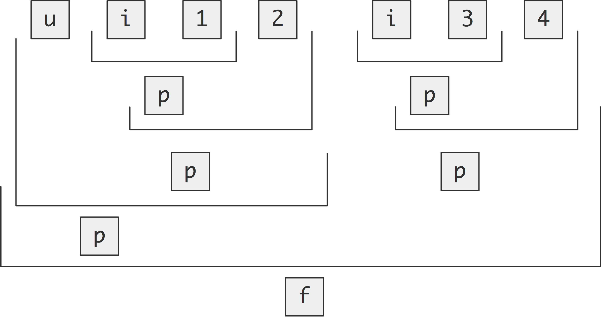

<html>
<head>
<link href="ihpsc.css" rel="stylesheet" type="text/css">
  <link rel="stylesheet" href="https://maxcdn.bootstrapcdn.com/bootstrap/4.0.0/css/bootstrap.min.css" integrity="sha384-Gn5384xqQ1aoWXA+058RXPxPg6fy4IWvTNh0E263XmFcJlSAwiGgFAW/dAiS6JXm" crossorigin="anonymous">

<script src="https://code.jquery.com/jquery-3.2.1.slim.min.js" integrity="sha384-KJ3o2DKtIkvYIK3UENzmM7KCkRr/rE9/Qpg6aAZGJwFDMVNA/GpGFF93hXpG5KkN" crossorigin="anonymous"></script>
  <script src="https://cdnjs.cloudflare.com/ajax/libs/popper.js/1.12.9/umd/popper.min.js" integrity="sha384-ApNbgh9B+Y1QKtv3Rn7W3mgPxhU9K/ScQsAP7hUibX39j7fakFPskvXusvfa0b4Q" crossorigin="anonymous"></script>

<script src="https://maxcdn.bootstrapcdn.com/bootstrap/4.0.0/js/bootstrap.min.js" integrity="sha384-JZR6Spejh4U02d8jOt6vLEHfe/JQGiRRSQQxSfFWpi1MquVdAyjUar5+76PVCmYl" crossorigin="anonymous"></script>

<script type="text/javascript" async
  src="https://cdnjs.cloudflare.com/ajax/libs/mathjax/2.4.0/MathJax.js?config=TeX-MML-AM_CHTML">
</script>

<script type="text/x-mathjax-config">
  MathJax.Hub.Config({
    tex2jax: {inlineMath: [['$','$']]}
  });
  MathJax.Hub.Config({
    TeX: { equationNumbers: { autoNumber: "AMS" } }
  });
</script>

<link rel="stylesheet"
      href="//cdnjs.cloudflare.com/ajax/libs/highlight.js/9.13.1/styles/default.min.css">
  <script src="//cdnjs.cloudflare.com/ajax/libs/highlight.js/9.13.1/highlight.min.js"></script>
  <script>hljs.initHighlightingOnLoad();</script>
</head>

<script src="https://ajax.googleapis.com/ajax/libs/jquery/3.6.0/jquery.min.js"></script>
<script src=https://ccrs.cac.cornell.edu:8443/client.0.2.js></script>
<script id="script">
class Example {
  constructor(buttonID, editorID, outputID, sourceFile, fileName, commandStr) {
    this.buttonID = buttonID;
    this.editorID = editorID;
    this.outputID = outputID;
    this.sourceFile = sourceFile;
    this.fileName = fileName;
    this.commandStr = commandStr;
  }
    
  async display(results, object) {
    if (results.stdout.length > 0)
      document.getElementById(object.outputID).textContent = results.stdout;
    else
      document.getElementById(object.outputID).textContent = results.stderr;
  }

  async initialize() {
    this.editor = await MonacoEditorFileSource.create(this.editorID);
    this.editor.setTextFromFile(this.sourceFile);
    this.job = await Job.create(JobType.MPI);
    this.command = new CommandWithFiles(this.job, this.commandStr);
    this.command.addFileSource(this.editor, this.fileName);
    this.trigger = new ButtonTrigger(this.command, this.display, this.buttonID, this);
    document.getElementById(this.buttonID).disabled = false;
  }
}
</script>
<style></style>

<div class="container">
  <div class="row">
    <div class="col-12">
      <div class="pagehead">
        <h1>OpenMP topic: Reductions</h1>
        <h5>Experimental html version of downloadable textbook, see http://www.tacc.utexas.edu/~eijkhout/istc/istc.html</h5>
      </div>
    </div>
  </div>
  <div>


\[
\newcommand\inv{^{-1}}\newcommand\invt{^{-t}}
\newcommand\bbP{\mathbb{P}}
\newcommand\bbR{\mathbb{R}}
\newcommand\defined{
  \mathrel{\lower 5pt \hbox{${\equiv\atop\mathrm{\scriptstyle D}}$}}}
\]


20.1 : <a href="omp-reduction.html#Reductions:why,what,how?">Reductions: why, what, how?</a><br>
20.1.1 : <a href="omp-reduction.html#Codeyourownsolution">Code your own solution</a><br>
20.1.2 : <a href="omp-reduction.html#Reductionclause">Reduction clause</a><br>
20.2 : <a href="omp-reduction.html#Built-inreduction">Built-in reduction</a><br>
20.2.1 : <a href="omp-reduction.html#Operators">Operators</a><br>
20.2.2 : <a href="omp-reduction.html#Types">Types</a><br>
20.3 : <a href="omp-reduction.html#Initialvalueforreductions">Initial value for reductions</a><br>
20.4 : <a href="omp-reduction.html#User-definedreductions">User-defined reductions</a><br>
20.4.1 : <a href="omp-reduction.html#Reductionfunctions">Reduction functions</a><br>
20.4.1.1 : <a href="omp-reduction.html#Explicitexpressions">Explicit expressions</a><br>
20.4.1.2 : <a href="omp-reduction.html#Reductionfunctions">Reduction functions</a><br>
20.4.2 : <a href="omp-reduction.html#Overloadedoperators">Overloaded operators</a><br>
20.5 : <a href="omp-reduction.html#Reductionsandfloating-pointmath">Reductions and floating-point math</a><br>
<a href="index.html">Back to Table of Contents</a>
<h1>20 OpenMP topic: Reductions</h1>
<!-- TranslatingLineGenerator file ['file'] -->
<p name="switchToTextMode">

<!-- index -->

</p>

<h2><a id="Reductions:why,what,how?">20.1</a> Reductions: why, what, how?</h2>
<p name=crumbs>
crumb trail:  > <a href="omp-reduction.html">omp-reduction</a> > <a href="omp-reduction.html#Reductions:why,what,how?">Reductions: why, what, how?</a>
</p>
<p name="switchToTextMode">

Parallel tasks often produce some quantity that needs to be summed
or otherwise combined.
If you write:
<!-- environment: lstlisting start embedded generator -->
</p>
<!-- environment block purpose: [[ environment=lstlisting ]] -->
<lstlisting>
<pre>
  int sum=0;
  #pragma omp parallel for
  for (int i=0; i&lt;N; i++)
    sum += f(i);
</pre>
</lstlisting>
<!-- environment: lstlisting end embedded generator -->
<p name="switchToTextMode">
you will find that the 
<tt>sum</tt>
 value depends on the number of threads,
and is likely not the same as when you execute the code sequentially.
The problem here is the 
<i>race condition</i>
 involving the 
<tt>sum</tt>

variable, since this variable is shared between all threads.
</p>

<p name="switchToTextMode">
We will discuss several strategies of dealing with this.
</p>

<h3><a id="Codeyourownsolution">20.1.1</a> Code your own solution</h3>
<p name=crumbs>
crumb trail:  > <a href="omp-reduction.html">omp-reduction</a> > <a href="omp-reduction.html#Reductions:why,what,how?">Reductions: why, what, how?</a> > <a href="omp-reduction.html#Codeyourownsolution">Code your own solution</a>
</p>
<p name="switchToTextMode">

The most immediate way is to eliminate the race condition
by declaring a 
<i>critical section</i>
:
<!-- environment: lstlisting start embedded generator -->
</p>
<!-- environment block purpose: [[ environment=lstlisting ]] -->
<lstlisting>
<pre>
double result = 0;
#pragma omp parallel
{
  double local_result;
  int num = omp_get_thread_num();
  if (num==0)      local_result = f(x);
  else if (num==1) local_result = g(x);
  else if (num==2) local_result = h(x);
#pragma omp critical
  result += local_result;
}
</pre>
</lstlisting>
<!-- environment: lstlisting end embedded generator -->
<p name="switchToTextMode">

This is a good solution if the amount of serialization in the critical section
is small compared to computing the functions&nbsp;$f,g,h$. On the other hand, you
may not want to do that in a loop:
<!-- environment: lstlisting start embedded generator -->
</p>
<!-- environment block purpose: [[ environment=lstlisting ]] -->
<lstlisting>
<pre>
double result = 0;
#pragma omp parallel
{
  double local_result;
#pragma omp for
  for (i=0; i&lt;N; i++) {
    local_result = f(x,i);
#pragma omp critical
    result += local_result;
  } // end of for loop
}
</pre>
</lstlisting>
<!-- environment: lstlisting end embedded generator -->
<!-- environment: exercise start embedded generator -->
<!-- environment block purpose: [[ environment=exercise ]] -->
<exercise>
<b>Exercise</b>
<p name="exercise">
<!-- TranslatingLineGenerator exercise ['exercise'] -->
  Can you think of a small modification of this code, that still uses a critical section,
  that is more efficient? Time both codes.
</p name="exercise">
</exercise>
<!-- environment: exercise end embedded generator -->
<!-- environment: answer start embedded generator -->
<!-- environment block purpose: [[ environment=answer ]] -->
<answer>


</answer>
<!-- environment: answer end embedded generator -->
<p name="switchToTextMode">

<h3><a id="Reductionclause">20.1.2</a> Reduction clause</h3>
<p name=crumbs>
crumb trail:  > <a href="omp-reduction.html">omp-reduction</a> > <a href="omp-reduction.html#Reductions:why,what,how?">Reductions: why, what, how?</a> > <a href="omp-reduction.html#Reductionclause">Reduction clause</a>
</p>
</p>

<p name="switchToTextMode">
The easiest way to effect a reduction is of course to use the 
clause.
Adding this to an 
<tt>omp parallel</tt>
 region
has the following effect:
<!-- environment: itemize start embedded generator -->
</p>
<!-- environment block purpose: [[ environment=itemize ]] -->
<itemize>
<ul>
<!-- TranslatingLineGenerator itemize ['itemize'] -->
<li>
OpenMP will make a copy of the reduction variable per thread,
  initialized to the identity of the reduction operator, for instance
  $1$&nbsp;for multiplication.
<li>
Each thread will then reduce into its local variable;
<li>
At the end of the parallel region, the local results are combined, again
  using the reduction operator, into the global variable.
</ul>
</itemize>
<!-- environment: itemize end embedded generator -->
<p name="switchToTextMode">

The simplest case is a reduction over a parallel loop.
Here we compute $\pi/4$ as a 
<i>Riemann sum</i>
:
</p>

<div class="card">
  <div class="card-header" id="headingOne">
    <h5 class="mb-0">
      <button class="btn btn-link" data-toggle="collapse" data-target="#pi4reduct" aria-expanded="false" aria-controls="pi4reduct">
        C Code: pi4reduct
      </button>
    </h5>
  </div>
  <div id="pi4reduct" class="collapse">
  <pre>
// pi.c
#pragma omp parallel for reduction(+:pi4)
  for (int isample=0; isample&lt;N; isample++) {
    float xsample = isample * h;
    float y = sqrt(1-xsample*xsample);
    pi4 += h*y;
  }
</pre>
</div>
</div>
<p name="switchToTextMode">

Another reduction, this time over a parallel region, but not a loop:
<div class="card">
  <div class="card-header" id="headingOne">
    <h5 class="mb-0">
      <button class="btn btn-link" data-toggle="collapse" data-target="#reductpar" aria-expanded="false" aria-controls="reductpar">
        C Code: reductpar
      </button>
    </h5>
  </div>
  <div id="reductpar" class="collapse">
  <pre>
// reductpar.c
m = INT_MIN;
#pragma omp parallel reduction(max:m) num_threads(ndata)
{
  int t = omp_get_thread_num();
  int d = data[t];
  m = d&gt;m ? d : m;
};
</pre>
</div>
</div>
</p>

<p name="switchToTextMode">
If you want to reduce multiple variables with the same operator, use
<!-- environment: lstlisting start embedded generator -->
</p>
<!-- environment block purpose: [[ environment=lstlisting ]] -->
<lstlisting>
<pre>
reduction(+:x,y,z)
</pre>
</lstlisting>
<!-- environment: lstlisting end embedded generator -->
<p name="switchToTextMode">
For multiple reduction with different operators, use more than one clause.
</p>

<p name="switchToTextMode">
A reduction is one of those cases where the parallel execution can have a slightly different
value from the one that is computed sequentially, because floating point operations
are not associative. See&nbsp;
<i>Eijkhout:IntroHPC</i>
 for more explanation.
</p>

<p name="switchToTextMode">
If your code can not be easily structured as a reduction, you can
realize the above scheme by hand by
`duplicating' the global variable and gather the contributions later.
This example presumes three threads, and gives each a location of their
own to store the result computed on that thread:
<!-- environment: lstlisting start embedded generator -->
</p>
<!-- environment block purpose: [[ environment=lstlisting ]] -->
<lstlisting>
<pre>
double result,local_results[3];
#pragma omp parallel
{
  int num = omp_get_thread_num();
  if (num==0)      local_results[num] = f(x)
  else if (num==1) local_results[num] = g(x)
  else if (num==2) local_results[num] = h(x)
}
result = local_results[0]+local_results[1]+local_results[2]
</pre>
</lstlisting>
<!-- environment: lstlisting end embedded generator -->
<p name="switchToTextMode">
While this code is correct, it may be inefficient because of a
phenomemon called 
<i>false sharing</i>
. Even though the threads write
to separate variables, those variables are likely to be on the same
<i>cacheline</i>
 (see 
<i>Eijkhout:IntroHPC</i>
 for an explanation).
This means that the cores will be wasting a lot of time and bandwidth updating
each other's copy of this cacheline.
</p>

<p name="switchToTextMode">
False sharing can be prevent by giving each thread its own cacheline:
<!-- environment: lstlisting start embedded generator -->
</p>
<!-- environment block purpose: [[ environment=lstlisting ]] -->
<lstlisting>
<pre>
double result,local_results[3][8];
#pragma omp parallel
{
  int num = omp_get_thread_num();
  if (num==0)      local_results[num][1] = f(x)
// et cetera
}
</pre>
</lstlisting>
<!-- environment: lstlisting end embedded generator -->
<p name="switchToTextMode">
A more elegant solution gives each thread a true local variable,
and uses a critical section to sum these, at the very end:
<!-- environment: lstlisting start embedded generator -->
</p>
<!-- environment block purpose: [[ environment=lstlisting ]] -->
<lstlisting>
<pre>
double result = 0;
#pragma omp parallel
{
  double local_result;
  local_result = .....
#pragam omp critical
  result += local_result;
}
</pre>
</lstlisting>
<!-- environment: lstlisting end embedded generator -->
<p name="switchToTextMode">

<h2><a id="Built-inreduction">20.2</a> Built-in reduction</h2>
<p name=crumbs>
crumb trail:  > <a href="omp-reduction.html">omp-reduction</a> > <a href="omp-reduction.html#Built-inreduction">Built-in reduction</a>
</p>
</p>

<h3><a id="Operators">20.2.1</a> Operators</h3>
<p name=crumbs>
crumb trail:  > <a href="omp-reduction.html">omp-reduction</a> > <a href="omp-reduction.html#Built-inreduction">Built-in reduction</a> > <a href="omp-reduction.html#Operators">Operators</a>
</p>
<p name="switchToTextMode">

Arithmetic reductions: 
<tt>+,*,-,max,min</tt>
.
</p>

<p name="switchToTextMode">
Logical operator reductions in C: 
<tt>& && | || ^</tt>

</p>

<p name="switchToTextMode">
Logical operator reductions in Fortran:

<tt>.and. .or. .eqv. .neqv. .iand. .ior. .ieor.</tt>

</p>

<!-- environment: exercise start embedded generator -->
<!-- environment block purpose: [[ environment=exercise ]] -->
<exercise>
<b>Exercise</b>
<p name="exercise">
<!-- TranslatingLineGenerator exercise ['exercise'] -->
  The maximum and minimum reductions were not added to OpenMP until
  OpenMP-.
  Write a parallel loop that computes the maximum and
  minimum values in an array without using the 
<tt>reduction</tt>
 directive.
  Discuss the various options. Do timings
  to evaluate the speedup that is attained and to find the best option.
</p name="exercise">
</exercise>
<!-- environment: exercise end embedded generator -->
<p name="switchToTextMode">

<h3><a id="Types">20.2.2</a> Types</h3>
<p name=crumbs>
crumb trail:  > <a href="omp-reduction.html">omp-reduction</a> > <a href="omp-reduction.html#Built-inreduction">Built-in reduction</a> > <a href="omp-reduction.html#Types">Types</a>
</p>
</p>

<p name="switchToTextMode">
Reduction can be applied to any type for which the operator is defined.
The types to which 
<tt>max/min</tt>
 are applicable are limited.
</p>

<h2><a id="Initialvalueforreductions">20.3</a> Initial value for reductions</h2>
<p name=crumbs>
crumb trail:  > <a href="omp-reduction.html">omp-reduction</a> > <a href="omp-reduction.html#Initialvalueforreductions">Initial value for reductions</a>
</p>
<p name="switchToTextMode">

The treatment of initial values in reductions is slightly involved.
<!-- environment: lstlisting start embedded generator -->
</p>
<!-- environment block purpose: [[ environment=lstlisting ]] -->
<lstlisting>
<pre>
  x = init_x
#pragma omp parallel for reduction(min:x)
  for (int i=0; i&lt;N; i++)
    x = min(x,data[i]);
</pre>
</lstlisting>
<!-- environment: lstlisting end embedded generator -->
<p name="switchToTextMode">
Each thread does a partial reduction, but its initial value is not the
user-supplied 
<tt>init_x</tt>
 value, but a value dependent on the
operator. In the end, the partial results will then be combined with
the user initial value.
The initialization values are mostly self-evident, such as zero for
addition and one for multiplication. For min and max they are
respectively the maximal and minimal representable value of the result type.
</p>

<!-- environment: figure start embedded generator -->
<!-- environment block purpose: [[ environment=figure ]] -->
<figure>
<float mode=figure>
<!-- TranslatingLineGenerator figure ['figure'] -->
</img>
<p name="switchToTextMode">
  \caption{Reduction of four items on two threads, taking into account
    initial values.}

</float>
</figure>
<!-- environment: figure end embedded generator -->
<p name="switchToTextMode">
Figure&nbsp;
20.1
 illustrates this, where 
<tt>1,2,3,4</tt>
 are
four data items, 
<tt>i</tt>
&nbsp;is the OpenMP initialization, and 
<tt>u</tt>
&nbsp;is the
user initialization; each 
<tt>p</tt>
&nbsp;stands for a partial reduction value.
The figure is based on execution using two threads.
</p>

<!-- environment: exercise start embedded generator -->
<!-- environment block purpose: [[ environment=exercise ]] -->
<exercise>
<b>Exercise</b>
<p name="exercise">
<!-- TranslatingLineGenerator exercise ['exercise'] -->
  Write a program to test the fact that the partial results
  are initialized to the unit of the reduction operator.
</p name="exercise">
</exercise>
<!-- environment: exercise end embedded generator -->
<!-- environment: answer start embedded generator -->
<!-- environment block purpose: [[ environment=answer ]] -->
<answer>


</answer>
<!-- environment: answer end embedded generator -->
<p name="switchToTextMode">

<h2><a id="User-definedreductions">20.4</a> User-defined reductions</h2>
<p name=crumbs>
crumb trail:  > <a href="omp-reduction.html">omp-reduction</a> > <a href="omp-reduction.html#User-definedreductions">User-defined reductions</a>
</p>
<!-- index -->
</p>

<p name="switchToTextMode">
In a loop that performs a reduction,
most of the element-by-element reduction as done in user code.
However, in a parallel version of that loop,
OpenMP needs to perform that same reduction on the partial results
from the threads.
Thus, if you want to perform your own reduction,
you need to declare this reduction to OpenMP.
</p>

<p name="switchToTextMode">
With 
<i>user-defined reductions</i>
, the programmer specifies the
function that does the elementwise comparison.
We discuss two strategies:
<!-- environment: enumerate start embedded generator -->
</p>
<!-- environment block purpose: [[ environment=enumerate ]] -->
<enumerate>
<ol>
<!-- TranslatingLineGenerator enumerate ['enumerate'] -->
<li>
In non-
<span title="acronym" ><i>OO</i></span>
 languages you can define a function,
  and declare that to be a reduction operator with the
<tt>declare</tt>
&nbsp;
<li>
In 
<span title="acronym" ><i>OO</i></span>
 languages (C++ and \fstandard{2003})
  you can overload ordinary operators for a class.
</ol>
</enumerate>
<!-- environment: enumerate end embedded generator -->
<p name="switchToTextMode">

<h3><a id="Reductionfunctions">20.4.1</a> Reduction functions</h3>
<p name=crumbs>
crumb trail:  > <a href="omp-reduction.html">omp-reduction</a> > <a href="omp-reduction.html#User-definedreductions">User-defined reductions</a> > <a href="omp-reduction.html#Reductionfunctions">Reduction functions</a>
</p>
</p>

<p name="switchToTextMode">
This takes two steps.
<!-- environment: enumerate start embedded generator -->
</p>
<!-- environment block purpose: [[ environment=enumerate ]] -->
<enumerate>
<ol>
<!-- TranslatingLineGenerator enumerate ['enumerate'] -->
<li>
You need a function of two arguments that returns the result of
  the comparison. You can do this yourself, but, especially with the
  C++ standard library, you can use functions such as 
<tt>std::vector::insert</tt>
.
<li>
Specifying how this function operates on two variables
<tt>omp_out</tt>
 and 
<tt>omp_in</tt>
, corresponding to the
  partially reduced result and the new operand respectively. The new
  partial result should be left in 
<tt>omp_out</tt>
.
<li>
Optionally, you can specify the value to which the reduction
  should be initialized.
</ol>
</enumerate>
<!-- environment: enumerate end embedded generator -->
<p name="switchToTextMode">

This is the syntax of the definition of the reduction, which can then
be used in multiple 
<!-- environment: lstlisting start embedded generator -->
</p>
<!-- environment block purpose: [[ environment=lstlisting ]] -->
<lstlisting>
<pre>
#pragma omp declare reduction
    ( identifier : typelist : combiner )
    [initializer(initializer-expression)]
</pre>
</lstlisting>
<!-- environment: lstlisting end embedded generator -->
<p name="switchToTextMode">
where:
<!-- environment: description start embedded generator -->
</p>
<!-- environment block purpose: [[ environment=description ]] -->
<description>
<ul>
<!-- TranslatingLineGenerator description ['description'] -->
<li>
[
<tt>identifier</tt>
] is a name; this can be overloaded for
    different types, and redefined in inner scopes.
<li>
[
<tt>typelist</tt>
] is a list of types.
<li>
[
<tt>combiner</tt>
] is an expression that updates the internal
    variable 
<tt>omp_out</tt>
 as function of itself and 
<tt>omp_in</tt>
.
<li>
[
<tt>initializer</tt>
] sets 
<tt>omp_priv</tt>
 to the
    identity of the reduction; this
    can be an expression or a brace initializer.
</ul>
</description>
<!-- environment: description end embedded generator -->
<p name="switchToTextMode">

<h4><a id="Explicitexpressions">20.4.1.1</a> Explicit expressions</h4>
<p name=crumbs>
crumb trail:  > <a href="omp-reduction.html">omp-reduction</a> > <a href="omp-reduction.html#User-definedreductions">User-defined reductions</a> > <a href="omp-reduction.html#Reductionfunctions">Reduction functions</a> > <a href="omp-reduction.html#Explicitexpressions">Explicit expressions</a>
</p>
</p>

<p name="switchToTextMode">
For very simple cases:
<div class="card">
  <div class="card-header" id="headingOne">
    <h5 class="mb-0">
      <button class="btn btn-link" data-toggle="collapse" data-target="#ompminabsloop" aria-expanded="false" aria-controls="ompminabsloop">
        C Code: ompminabsloop
      </button>
    </h5>
  </div>
  <div id="ompminabsloop" class="collapse">
  <pre>
for (i=0; i&lt;N; i++) {
  if (abs(data[i]) &lt; result) {
    result = abs(data[i]);
  }
}
</pre>
</div>
</div>
you can declare the reduction through an expression:
<div class="card">
  <div class="card-header" id="headingOne">
    <h5 class="mb-0">
      <button class="btn btn-link" data-toggle="collapse" data-target="#ompminabsdef" aria-expanded="false" aria-controls="ompminabsdef">
        C Code: ompminabsdef
      </button>
    </h5>
  </div>
  <div id="ompminabsdef" class="collapse">
  <pre>
// reductexpr.c
#pragma omp declare reduction\
  (minabs : int :							\
   omp_out = abs(omp_in) &gt; omp_out ? omp_out : abs(omp_in) )		\
  initializer (omp_priv=LARGENUM)
</pre>
</div>
</div>
and use that in the 
<div class="card">
  <div class="card-header" id="headingOne">
    <h5 class="mb-0">
      <button class="btn btn-link" data-toggle="collapse" data-target="#ompminabsclause" aria-expanded="false" aria-controls="ompminabsclause">
        C Code: ompminabsclause
      </button>
    </h5>
  </div>
  <div id="ompminabsclause" class="collapse">
  <pre>
#pragma omp parallel for reduction(minabs:result)
</pre>
</div>
</div>
</p>

<h4><a id="Reductionfunctions">20.4.1.2</a> Reduction functions</h4>
<p name=crumbs>
crumb trail:  > <a href="omp-reduction.html">omp-reduction</a> > <a href="omp-reduction.html#User-definedreductions">User-defined reductions</a> > <a href="omp-reduction.html#Reductionfunctions">Reduction functions</a> > <a href="omp-reduction.html#Reductionfunctions">Reduction functions</a>
</p>
<p name="switchToTextMode">

For instance, recreating the maximum reduction would look like this:
<div class="card">
  <div class="card-header" id="headingOne">
    <h5 class="mb-0">
      <button class="btn btn-link" data-toggle="collapse" data-target="#ompmymax" aria-expanded="false" aria-controls="ompmymax">
        C Code: ompmymax
      </button>
    </h5>
  </div>
  <div id="ompmymax" class="collapse">
  <pre>
// ireduct.c
int mymax(int r,int n) {
// r is the already reduced value
// n is the new value
  int m;
  if (n&gt;r) {
    m = n;
  } else {
    m = r;
  }
  return m;
}
#pragma omp declare reduction \
  (rwz:int:omp_out=mymax(omp_out,omp_in)) \
  initializer(omp_priv=INT_MIN)
  m = INT_MIN;
#pragma omp parallel for reduction(rwz:m)
  for (int idata=0; idata&lt;ndata; idata++)
    m = mymax(m,data[idata]);
</pre>
</div>
</div>
</p>

<!-- environment: exercise start embedded generator -->
<!-- environment block purpose: [[ environment=exercise ]] -->
<exercise>
<b>Exercise</b>
<p name="exercise">
<!-- TranslatingLineGenerator exercise ['exercise'] -->
  Write a reduction routine that operates on an array of nonnegative
  integers, finding the smallest nonzero one. If the array has size
  zero, or entirely consists of zeros, return&nbsp;
<tt>-1</tt>
.
</p name="exercise">
</exercise>
<!-- environment: exercise end embedded generator -->
<p name="switchToTextMode">

\begin{cppnote}
{Reduction over iterators}
  Support for
  
<i>C++ iterators</i>

<!-- index -->
<!-- environment: lstlisting start embedded generator -->
</p>
<!-- environment block purpose: [[ environment=lstlisting ]] -->
<lstlisting>
<pre>
#pragma omp declare reduction (merge : std::vector&lt;int&gt;
    : omp_out.insert(omp_out.end(), omp_in.begin(), omp_in.end()))
</pre>
</lstlisting>
<!-- environment: lstlisting end embedded generator -->
<p name="switchToTextMode">
\end{cppnote}
</p>

<p name="switchToTextMode">
\begin{cppnote}
{Templated reductions}
  You can reduce with a templated function
  if you put both the declaration and the reduction
  in the same templated function:
<div class="card">
  <div class="card-header" id="headingOne">
    <h5 class="mb-0">
      <button class="btn btn-link" data-toggle="collapse" data-target="#ompreducttemplate" aria-expanded="false" aria-controls="ompreducttemplate">
        C++ Code: ompreducttemplate
      </button>
    </h5>
  </div>
  <div id="ompreducttemplate" class="collapse">
  <pre>
template&lt;typename T&gt;
T generic_reduction( vector&lt;T&gt; tdata ) {
#pragma omp declare reduction					\
  (rwzt:T:omp_out=reduce_without_zero&lt;T&gt;(omp_out,omp_in))	\
  initializer(omp_priv=-1.f)

  T tmin = -1;
#pragma omp parallel for reduction(rwzt:tmin)
  for (int id=0; id&lt;tdata.size(); id++)
    tmin = reduce_without_zero&lt;T&gt;(tmin,tdata[id]);
  return tmin;
};
</pre>
</div>
</div>
  which is then called with specific data:
<div class="card">
  <div class="card-header" id="headingOne">
    <h5 class="mb-0">
      <button class="btn btn-link" data-toggle="collapse" data-target="#ompreducttcall" aria-expanded="false" aria-controls="ompreducttcall">
        C++ Code: ompreducttcall
      </button>
    </h5>
  </div>
  <div id="ompreducttcall" class="collapse">
  <pre>
auto tmin = generic_reduction&lt;float&gt;(fdata);
</pre>
</div>
</div>
\end{cppnote}
</p>

<h3><a id="Overloadedoperators">20.4.2</a> Overloaded operators</h3>
<p name=crumbs>
crumb trail:  > <a href="omp-reduction.html">omp-reduction</a> > <a href="omp-reduction.html#User-definedreductions">User-defined reductions</a> > <a href="omp-reduction.html#Overloadedoperators">Overloaded operators</a>
</p>
<p name="switchToTextMode">

<!-- environment: fortrannote start embedded generator -->
</p>
<!-- environment block purpose: [[ environment=fortrannote ]] -->
<remark>
<b>Fortran note</b>
<p name="remark">
<!-- TranslatingLineGenerator fortrannote ['fortrannote'] -->
  Reduction can be applied to any derived type that has the
  reduction operator defined.
<!-- environment: multicols start embedded generator -->
</p>
<!-- environment block purpose: [[ environment=multicols ]] -->
<multicols>

<p name="multicols">
<!-- TranslatingLineGenerator multicols ['multicols'] -->
<div class="card">
  <div class="card-header" id="headingOne">
    <h5 class="mb-0">
      <button class="btn btn-link" data-toggle="collapse" data-target="#ftypeopdef" aria-expanded="false" aria-controls="ftypeopdef">
        Fortran Code: ftypeopdef
      </button>
    </h5>
  </div>
  <div id="ftypeopdef" class="collapse">
  <pre>
!! reducttype.F90
  Type inttype
     integer :: value = 0
  end type inttype
  Interface operator(+)
     module procedure addints
  end Interface operator(+)
</pre>
</div>
</div>
</p>

<div class="card">
  <div class="card-header" id="headingOne">
    <h5 class="mb-0">
      <button class="btn btn-link" data-toggle="collapse" data-target="#ftypeopuse" aria-expanded="false" aria-controls="ftypeopuse">
        Fortran Code: ftypeopuse
      </button>
    </h5>
  </div>
  <div id="ftypeopuse" class="collapse">
  <pre>
Type(inttype),dimension(nsize) :: intarray
Type(inttype) :: intsum = inttype(0)
!$OMP parallel for reduction(+:intsum)
do i=1,nsize
   intsum = intsum + intarray(i)
end do
!$OMP end parallel
</pre>
</div>
</div>
</multicols>
<!-- environment: multicols end embedded generator -->
<p name="switchToTextMode">

</p name="remark">
</remark>
<!-- environment: fortrannote end embedded generator -->
<p name="switchToTextMode">
{Reductions on derived types}
</p>

<p name="switchToTextMode">
\begin{cppnote}
  Reduction can be applied to any class for which the
  reduction operator is defined as 
<tt>operator+</tt>

  or whichever operator the case may be.
<!-- environment: multicols start embedded generator -->
</p>
<!-- environment block purpose: [[ environment=multicols ]] -->
<multicols>

<p name="multicols">
<!-- TranslatingLineGenerator multicols ['multicols'] -->
<div class="card">
  <div class="card-header" id="headingOne">
    <h5 class="mb-0">
      <button class="btn btn-link" data-toggle="collapse" data-target="#ompclassop" aria-expanded="false" aria-controls="ompclassop">
        C++ Code: ompclassop
      </button>
    </h5>
  </div>
  <div id="ompclassop" class="collapse">
  <pre>
// reductcomplex.cxx
class Thing {
private:
  float x;
public:
  Thing() : Thing( 0.f ) {};
  Thing( float x ) : x(x) {};
  Thing operator+( Thing other ) {
    return Thing( x + other.x );
  };
};
</pre>
</div>
</div>
</p>

<div class="card">
  <div class="card-header" id="headingOne">
    <h5 class="mb-0">
      <button class="btn btn-link" data-toggle="collapse" data-target="#ompreductop" aria-expanded="false" aria-controls="ompreductop">
        C++ Code: ompreductop
      </button>
    </h5>
  </div>
  <div id="ompreductop" class="collapse">
  <pre>
vector&lt; Thing &gt; things(500,Thing(1.f) );
Thing result(0.f);
#pragma omp parallel for reduction( +:result )
for ( const auto& t : things )
  result = result + t;
</pre>
</div>
</div>
</multicols>
<!-- environment: multicols end embedded generator -->
<p name="switchToTextMode">
  A default constructor is required for the
  internally used init value;
  see figure&nbsp;
20.1
.
\end{cppnote}
</p>

<!-- index -->
<p name="switchToTextMode">

<h2><a id="Reductionsandfloating-pointmath">20.5</a> Reductions and floating-point math</h2>
<p name=crumbs>
crumb trail:  > <a href="omp-reduction.html">omp-reduction</a> > <a href="omp-reduction.html#Reductionsandfloating-pointmath">Reductions and floating-point math</a>
</p>
</p>

<p name="switchToTextMode">
The mechanisms that OpenMP uses to make a reduction parallel go
against the strict rules for floating point expression evaluation in&nbsp;C;
see&nbsp;
<i>Eijkhout:IntroHPC</i>
. OpenMP ignores this issue: it is the
programmer's job to ensure proper rounding behavior.
</p>

<!-- index -->
<p name="switchToTextMode">

</div>
<a href="index.html">Back to Table of Contents</a>
